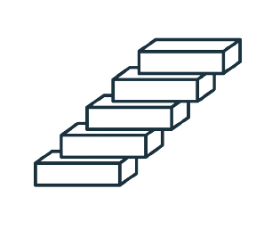
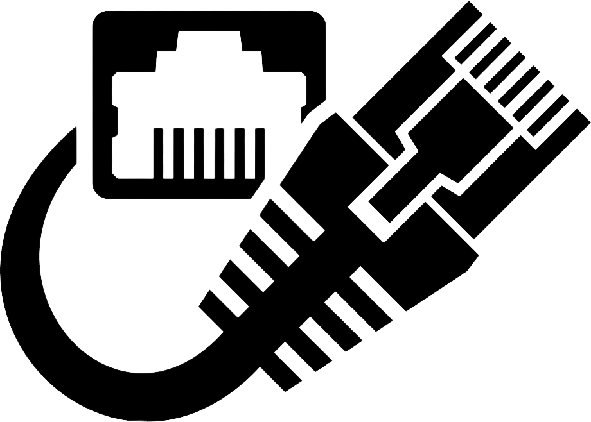

Home should be an anchor, a port in a storm, a refuge, a happy place in which to dwell, a
place where we are loved and where we can love.
Marvin J. Ashton
This page contains links to see various descriptions as well as the defintions about Networking. Each definitions are contained in a topic that is seperated by modules.
Introduction to Networking
This lesson introduces physical connection that has to take place for a computer to connect to the Internet and describe the different components of a network. It will demonstrate installation and troubleshooting of network interface cards and modems. This chapter also covers how to perform conversions between number systems.
Networking Fundamentals
This lesson explains the reason why layered models are used to describe data communication as well as understand the role of protocols in networking including to description about the differences between intranets and extranets
Networking Media
This lesson emphasizes all of the major media used in communicating any information anywhere. It also includes a discussion of the two "bounded media" of copper and optical fiber, and the "unbounded" medium of wireless, as the physical basis for the world revolution in communications systems.
Cable Testing
This lesson occupies the various techniques used to help assess the overall insulation quality of medium voltage cable systems, such as withstand testing, tan delta testing, and partial discharge testing.
LANs and WANs
This lesson identifies the characteristics of Ethernet networks. Identify straight-through, crossover, and rollover cables. Describe the function, advantages, and disadvantages of repeaters, hubs, bridges, switches, and wireless network components. Describe and differentiate between serial, Integrated Services Digital Network (ISDN), digital subscriber line (DSL), and cable modem WAN connections.